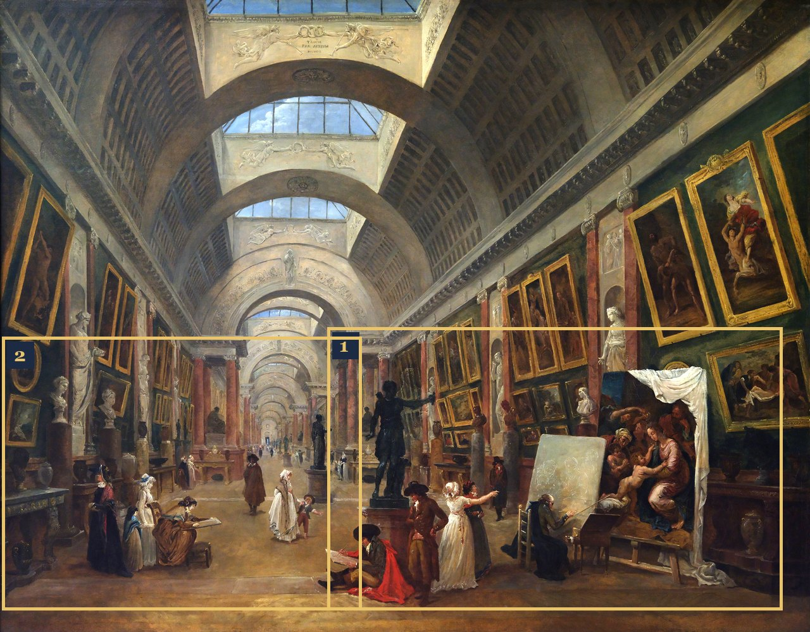
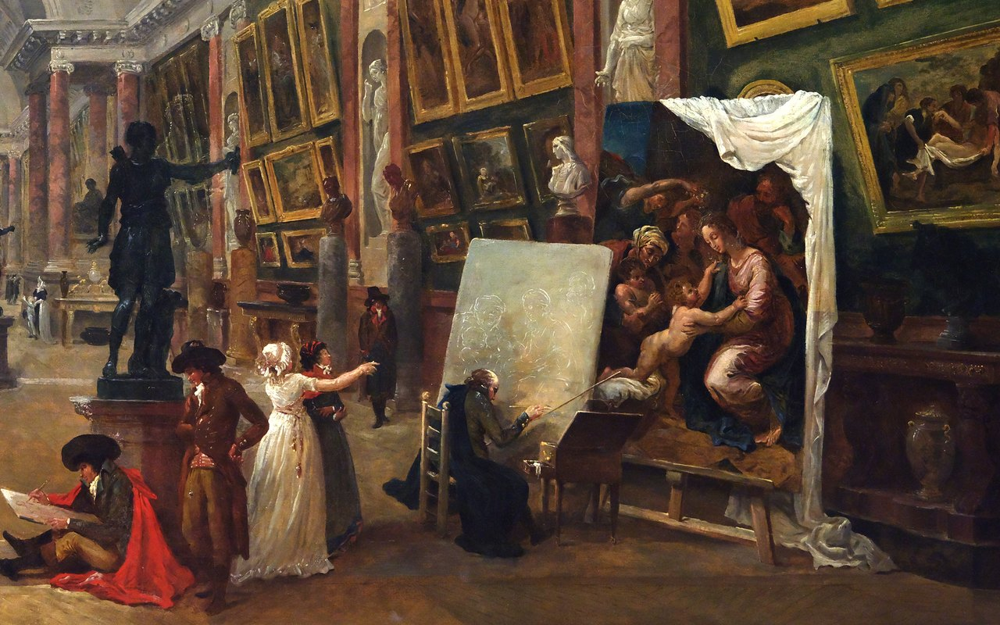
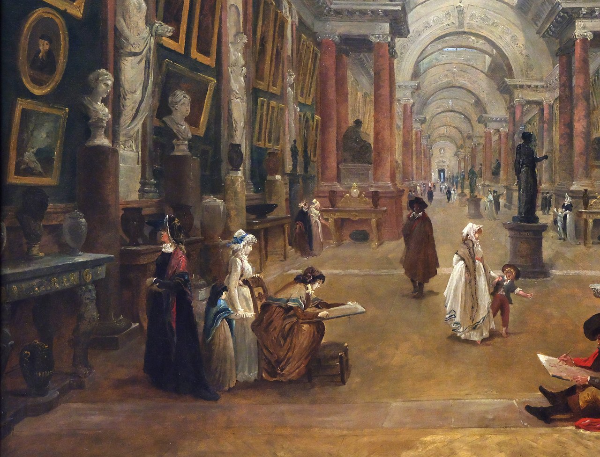

Optima Academy OnlineAn Education Experience Company
French 1 ◆ Module 6 · L’art et les musées
Lesson 6.08 · Day 8 of 8
Grammar Quiz & Module Close
Assessment day · about 55 minutes
Le tableau du module : Hubert Robert, La Grande Galerie du Louvre (The Grande Galerie of the Louvre), c. 1795
📝 Today: the Module 6 Grammar Quiz. It measures whether you can choose correctly between the passé composé and the imparfait. Two attempts are allowed — your higher score counts.
The following graded items should be completed by the end of the module. Warm up your ear first — the quiz includes listening questions — build three quick sentences in the Défi éclair, then take it in Canvas.
Attention !· Due by the end of Module 6
Today is the end of Module 6. All four should be submitted by the end of the module. Check that none is missing:
Tick each one once you have submitted it in Canvas. This list is just for you and stays on this device; Canvas keeps the real record.
All four submitted: bravo ! Module 6 is complete.
IÉCHAUFFEMENT D'ÉCOUTE5 min
Get your ear tuned. First, listen to a familiar passage — then answer one comprehension question by ear. This is a warm-up, not the quiz.
Now press this second 🔊 — a new sentence, not paragraph 1. Which two tenses does this one sentence combine?
IIEntraînement · practice, not graded
Défi éclair
PRACTICE · UNGRADED
BUILD IT YOURSELF 5 min
Type each answer in its box and press Check; the answer unlocks after you have tried.
⚡ DÉFI 1
In French: When I was little, I often went to the museum.
In French: When I was little, I often went to the museum.
Accents are part of the word. Click in a box, then click a letter to add it.
Quand j’étais petit, j’allais souvent au musée. Two imparfaits: a state and a habit.
⚡ DÉFI 2
In French: Yesterday I saw the painting again.
In French: Yesterday I saw the painting again.
Hier, j’ai revu le tableau. One completed action — passé composé.
⚡ DÉFI 3
Combine both tenses: The room was calm, and I admired the painting.
Combine both tenses: The room was calm, and I admired the painting.
La salle était calme, et j’ai admiré le tableau. Background in the imparfait, the event in the passé composé.
IIIConjugue ! · Verb practice, not graded5 min
Warm up before the Grammar Quiz: run two or three verbs from the menu, in the imparfait and in the passé composé. When every form turns green on the first try, you are ready.
Grammar Quiz · L’imparfait & le passé composé
30 pts · 2 attempts
COMPLETED IN CANVAS · AUTO-GRADED · should be submitted by the end of the module30 min
Listening items (~15 pts): hear a sentence, then answer — identify the tense, the subject, or the meaning. Headphones recommended; you can replay each clip.
Grammar items (~15 pts): form the imparfait, and choose passé composé vs. imparfait in context (completed event vs. ongoing scene/habit).
Two attempts — your higher score counts. Review any misses before your second try.
▶ To take the quiz: return to Module 6 in Canvas and open the Grammar Quiz — it is in the module’s item list, below the eight lessons.
IVRÉVISE TES ERREURS5 min
After your first attempt, look at what you missed. Most Module 6 errors fall into three buckets: wrong tense choice (event vs. scene), a wrong imparfait ending, or forgetting that être uses the stem ét-. Name which one caught you, fix that one thing, and take your second attempt.
VAU REVOIR, HUBERT ROBERT 5 minpractice · not graded
Before you close Module 6, go back to the Grande Galerie one last time, in Hubert Robert’s 1796 design: look closely at close-ups 1 and 2. You will compose three sentences about it in the imparfait, using the tools below: how the gallery was, what one person was doing, and what a group of visitors was doing. The fiche (fact card) gives you the words for the painting, the word bank adds more, and the coach checks each sentence as you write. Your sentences are saved in All Your Work.

The whole painting: Hubert Robert, Projet d’aménagement de la Grande Galerie du Louvre (Design for the Grande Galerie of the Louvre), 1796 · Musée du Louvre. Close-ups 1 and 2 are below.

1
Close-up 1 · a man drawing on the floor, visitors, an old artist at his easel

2
Close-up 2 · a woman drawing, visitors, white busts
CLÔTURE DU MODULE 6 — CE QUE TU SAIS FAIRE
I can name and understand 20 words for art and museums by ear.
I can form the imparfait from the nous-stem, including était and il y avait.
I can use the imparfait to describe, set the background, and say what I used to do.
I can choose between the passé composé and the imparfait — event vs. ongoing scene.
I can read and understand a full French memory that mixes both past tenses.
WHAT'S NEXT
→
Module 7 — La mode (Fashion)
Next you’ll talk about clothes and style, and learn object pronouns (je le vois (I see it), je les achète (I buy them)). Your two past tenses come right along with you. Before you start Module 7, make sure all four Module 6 assessments are completed.
✅ BEFORE YOU LEAVE
Once your Grammar Quiz is submitted in Canvas, click “Mark as Done” to close out Module 6.
MODULE 6 TERMINÉ ! (Module 6 complete!)
Two weeks ago you could only say what happened. Now you can paint the scene around it — the mood, the memory, the “used to.” That’s how the past comes to life in French. Félicitations ! (Congratulations!)
Optima Academy Online · FRENCH 1 🇫🇷 · Quarter 4 · Student Lesson Page
 Optima Academy OnlineAn Education Experience Company
Optima Academy OnlineAn Education Experience Company